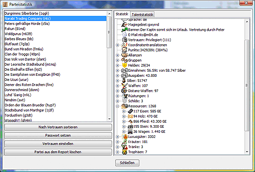
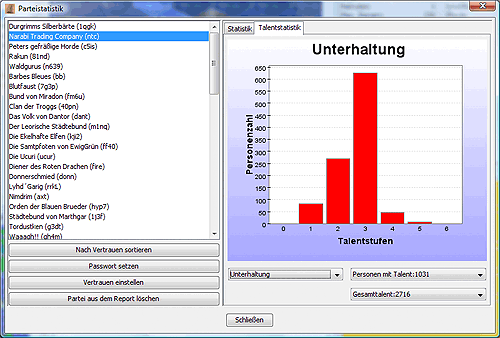
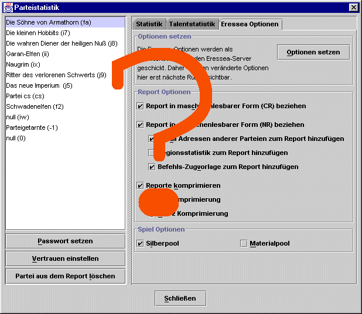

In der Parteistatistik kann man sich eine Übersicht über die im Report vorhandenen Parteien verschaffen.
Mit dem Knopf Password setzen kann man ein Password für die gewählte Partei eingeben. Erst wenn ein Password gesetzt ist, kann man Befehle für diese Partei schreiben und exportieren.
Mit dem Knopf Vertrauen einstellen kann man den Trustlevel für die gewählte(n) Partei(en) einstellen. Dieser wird z.B. für die Darstellung von politischen Karten (siehe Karteneinstellungen) genutzt. Wird hier nichts eingetragen, berechnet Magellan die Trustlevel aus den HELFE-Stati, die für diese Partei gesetzt sind, selbst.
Mit dem Knopf Partei aus dem Report löschen kann man eine Partei komplett aus dem Report entfernen, vorausgesetzt in der aktuellen Runde tauchen keine Einheiten dieser Partei im Report auf und es existieren auch sonst keine Beziehungen (z.B. Allianzen) zu dieser Partei mehr. Diese Funktion dient zum Entfernen von "Parteileichen", die man früher einmal getroffen hat, die aber im aktuellen Report nicht mehr auftauchen.

Wird im linken Fenster eine oder mehrere Partei(en) gewählt, erscheint im rechten Fenster eine statistische Aufstellung über alle Güter und Einheiten, die man aktuell von diese(r) Partei(en) sehen kann. Bei der eigenen Partei ist dies natürlich das komplette Inventar.
Bei allen Gegenständen wird angegeben, welche Einheit diese besitzt. Klickt man auf eine Einheit, wird diese im Hauptfenster angezeigt und man kann direkt Befehle für diese Einheit geben.

Dieser Reiter ist nur verfügbar, wenn das Charts-Paket (chart.jar) installiert ist.
Man kann hier sehen, wieviele Personen ein bestimmtes Talent in welcher Stufe haben. Dazu wählt man einfach aus dem Drop-Down-Menü oben links das gewünschte Talent aus. Die anderen Drop-Down-Menüs dienen nur der Information, man kann hier nichts einstellen. Sie zeigen die Anzahl der Personen mit dem Talent, die Gesamtlerntage und die Summe der Talentpunkte.

Hier kann man die Eressea-Reportoptionen setzen. Die Eressea-Optionen werden bei Klick auf den Knopf Optionen setzen als Einheitenbefehle (OPTION) generiert und mit den Befehlen an den Eressea-Server geschickt. Daher werden veränderte Optionen hier erst in der nächsten Runde sichtbar.
Die genaue Bedeutung der Optionen kann man hier nachlesen.
$Id: menu_extras_factionstatistics.html 8 2003-10-12 21:05:43Z eressea $